La tour Eiffel est une tour de fer puddlé de 324 mètres de hauteur (avec antennes)située à Paris, à l’extrémité nord-ouest du parc du Champ-de-Mars en bordure de la Seine dans le 7e arrondissement. Son adresse officielle est 5, avenue Anatole-France. Construite en deux ans par Gustave Eiffel et ses collaborateurs pour l’Exposition universelle de Paris de 1889, et initialement nommée « tour de 300 mètres », elle est devenue le symbole de la capitale française et un site touristique de premier plan : il s’agit du troisième site culturel français payant le plus visité en 2015, avec 5,9 millions de visiteurs en 2016.Depuis son ouverture au public, elle a accueilli plus de 300 millions de Elle fait partie des monuments les plus visités au monde. De la découverte des jardins historiques à l’éblouissement que suscite la vue sur Paris depuis le sommet, découvrir la tour Eiffel procure une émotion incroyable. Au 1er étage, sur le plancher vitré, on ressent la sensation unique de marcher au-dessus du vide. Sur la plateforme, le long de la coursive extérieure, des écrans, dalles tactiles, vitrines, albums numériques, reprographies d’objets…, permettent d’appréhender tous les aspects souvent méconnus de la Tour par le biais d’un parcours muséographique. Le Louvre, le Grand Palais, les boucles de la Seine, Montmartre, les Invalides, Notre-Dame…, l’arrivée au 2ème étage constitue un ravissement pour les yeux et pour les papilles. C’est en effet ici que se niche le restaurant étoilé Le Jules Verne mais aussi un bar à macarons, des espaces de vente à emporter ainsi que les boutiques officielles de souvenirs du monument. Destination finale : le sommet ! Grâce aux deux niveaux (l’un abrité, l’autre en extérieur), on peut déambuler et apprécier la vue unique sur la Ville Lumière à 276 mètres de hauteur tout en dégustant une coupe de champagne. Cet espace permet aussi d’admirer la reconstitution du bureau de Gustave Eiffel. Destination gastronomique à part entière, la tour Eiffel représente l’excellence à la française. Outre le Jules Verne avec Frédéric Anton aux manettes qui revisite les grands classiques français, la Brasserie (réouverture à l’automne 2020) proposera grâce à Thierry Marx une cuisine de bistrot parisien. Enfin, les visiteurs trouvent des espaces de restauration à emporter du parvis au sommet.
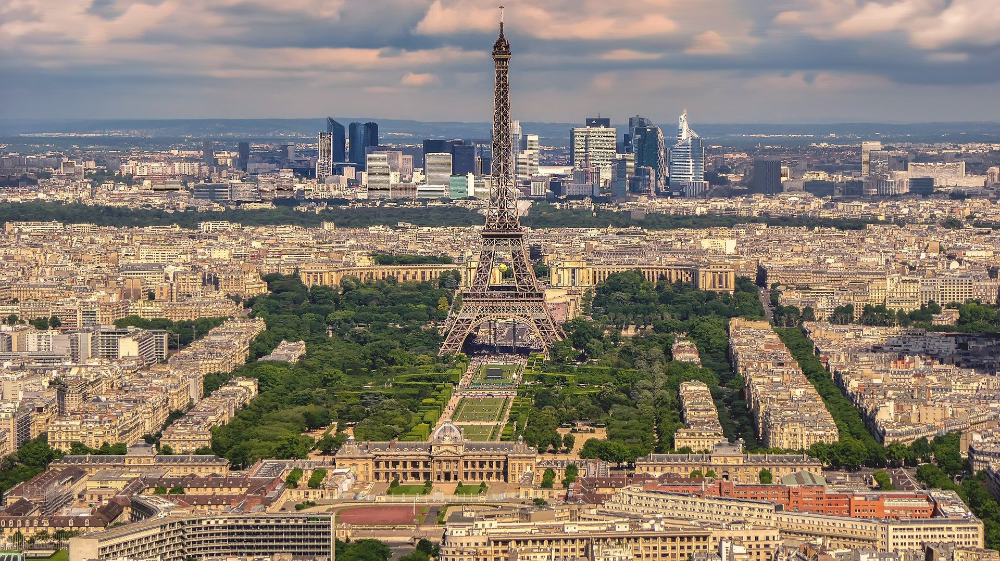

 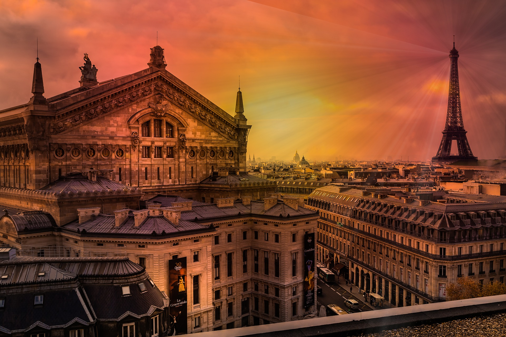
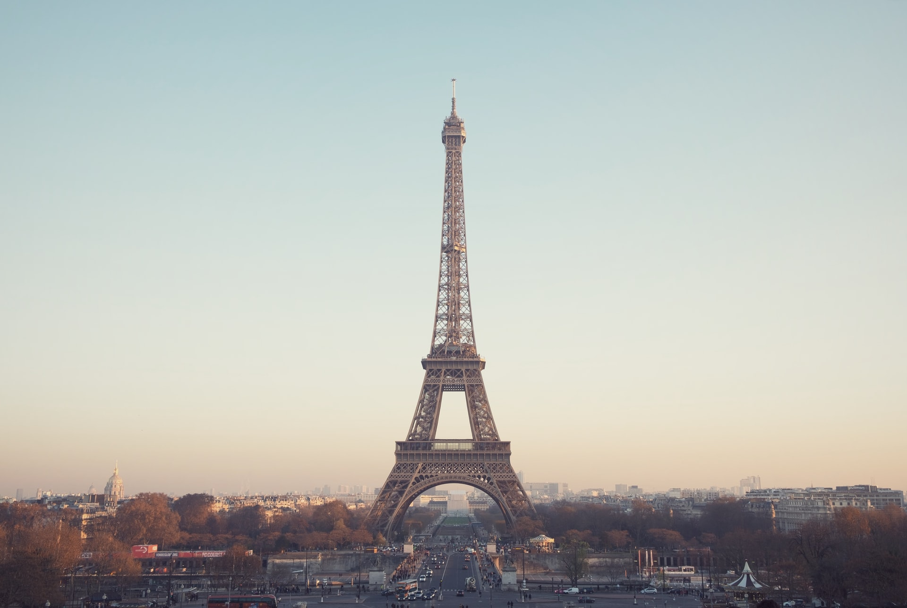
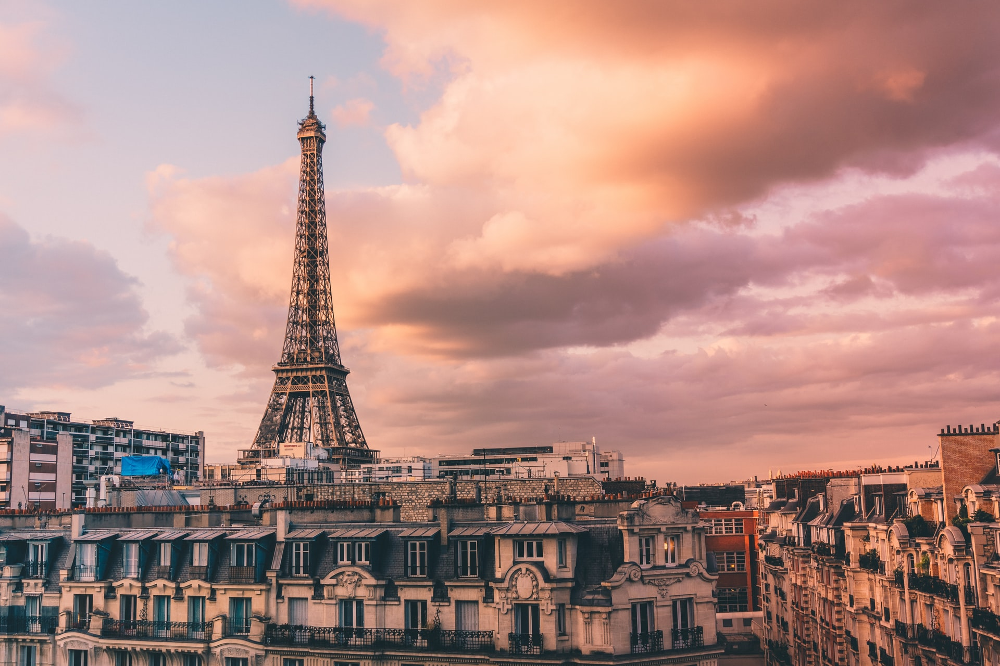
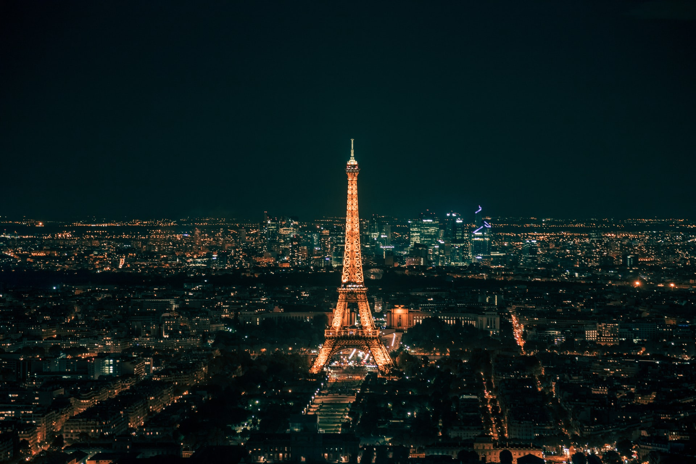
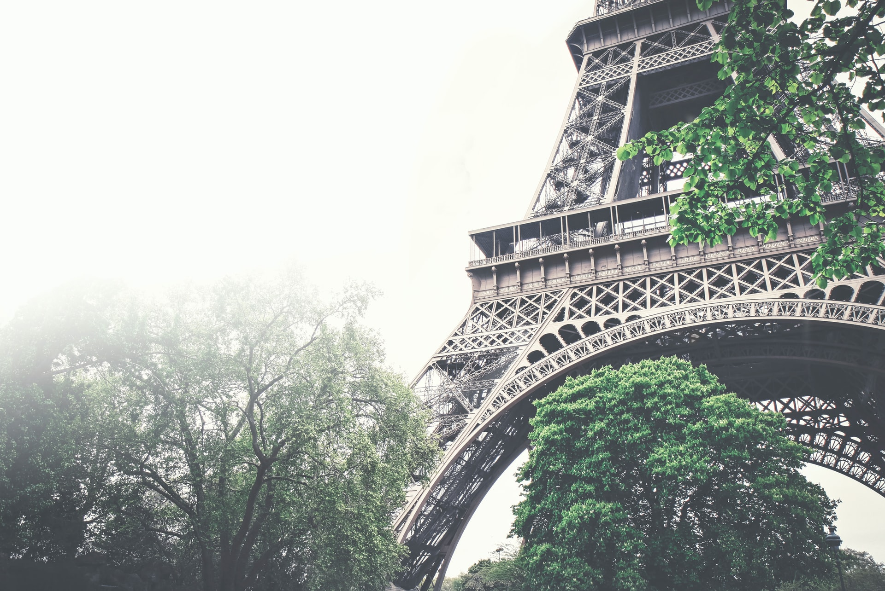
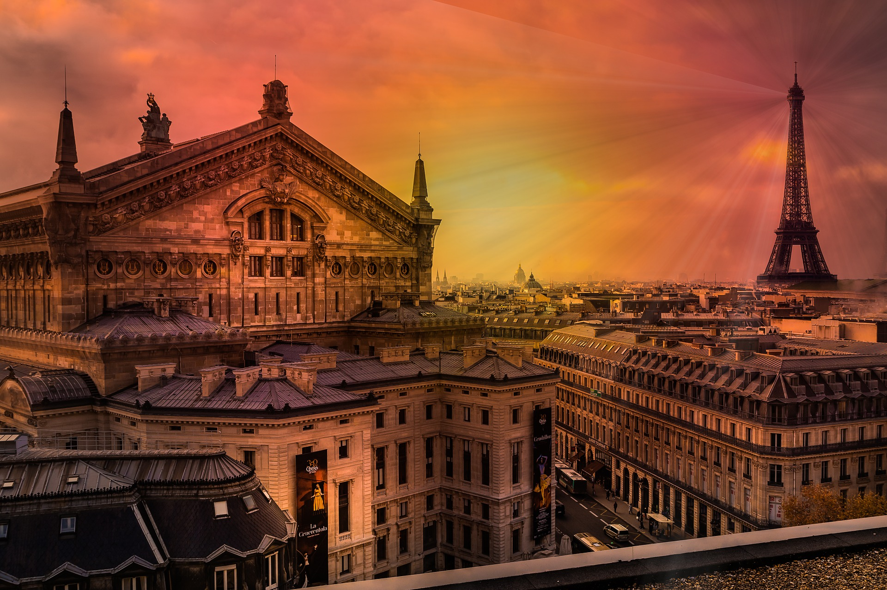
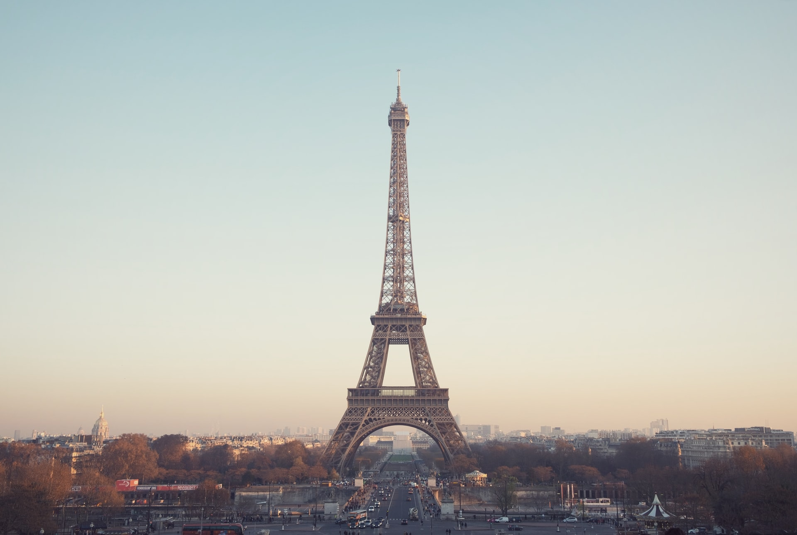
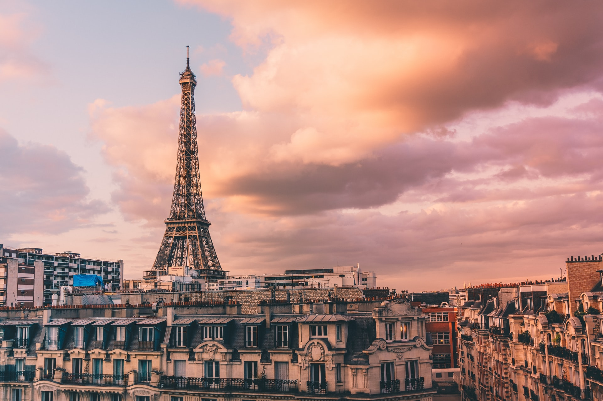
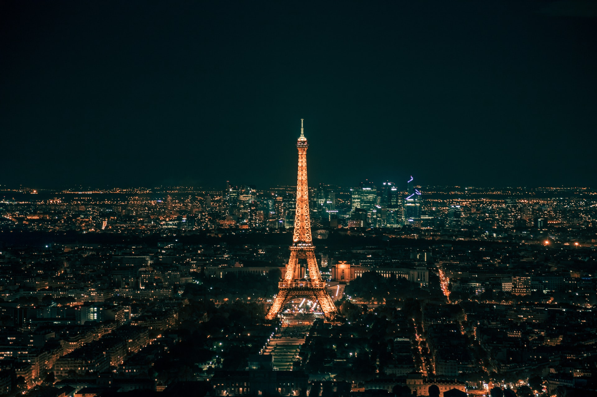
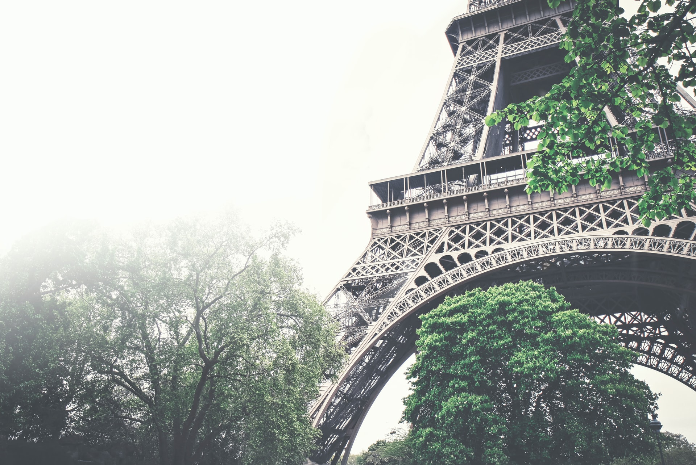
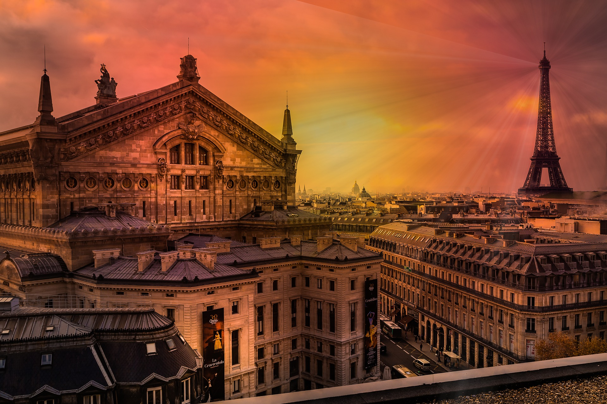
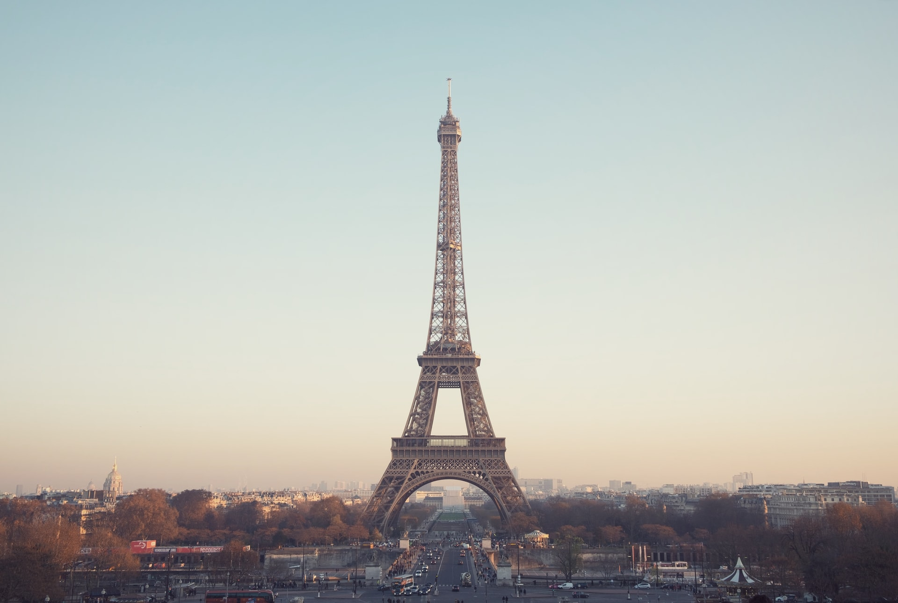
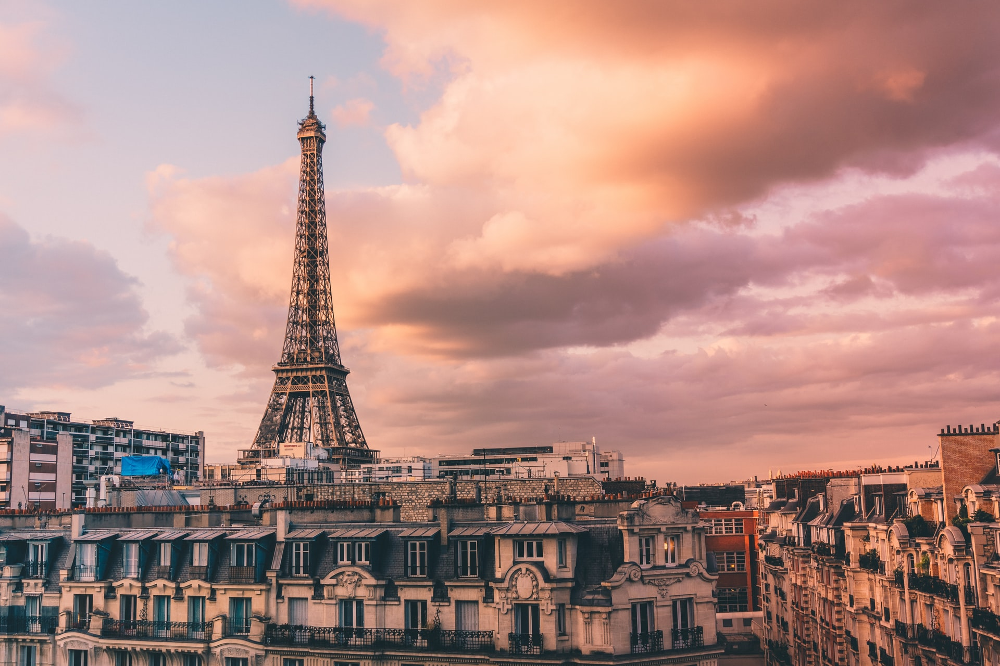
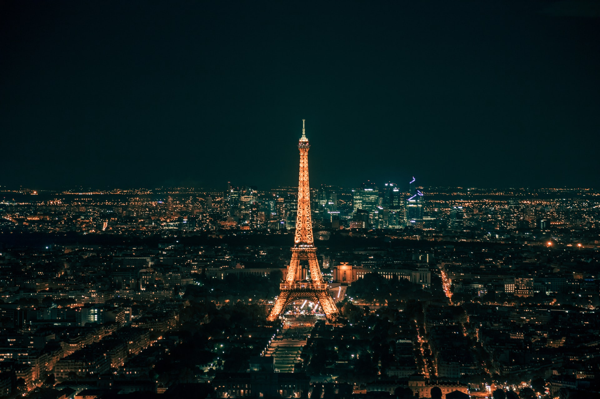
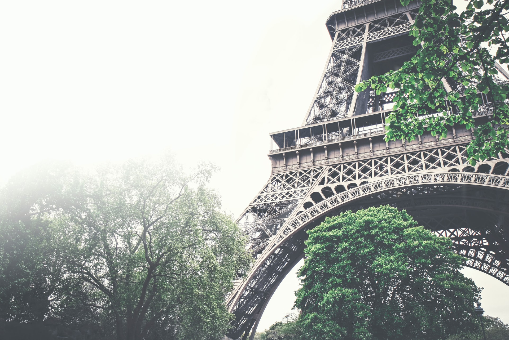